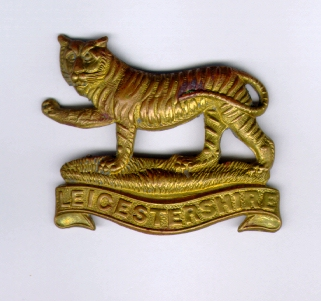
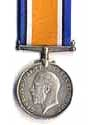
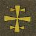
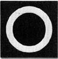

This is a record of the military service of William Drury (known to friends and family as Bill) during the First World War. Although his personal record was one of those destroyed by bombing over twenty years later it has been possible to reconstruct his experiences through unit histories and battalion diaries from World War One. We know through personal reminiscences that he was an infantryman in D Company of the 2/5 Leicestershire Regiment, part of the 177th Brigade in the 59th Division (Territorial Force). The Brigade took part in the suppression of the 1916 Easter Revolt in Ireland before being posted to France in 1917. In 1918 he was transferred to the 11th Leicesters, the Pioneer battalion of the 6th Division. He took part in the occupation of the Rhineland in 1919. The account is divided into the six main periods of service.




The 2/5th Leicestershire Regiment
Ireland and the Easter Rising 1916-1917

The 11th (Pioneer) Leicestershire Regiment
Sources include:
2/5 Leicestershire Regiment War Diary
11 Leicestershire Regiment War Diary
Soldiers of Shepshed Remembered 1914-19, Russell Fisher
The 177th Brigade, JPW Jamie
59th Division, EU Bradbridge
6th Division, TO Marden